히스토리
더욱 빛나는 66년을 향한 새 출발에 나섭니다.
-
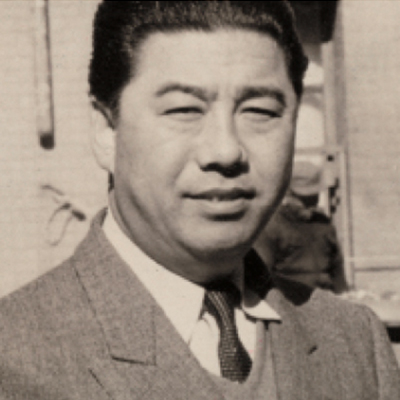
1956
오리온의 탄생
정직과 신용을 중시한 창업주 이양구 회장이 1956년 풍국제과를 인수하면서 탄생한 오리온은 캐러멜과 캔디를 시작으로 국내 최초 신식 제조시설을 도입하고 수많은 히트상품을 만들어내며 국내 제과시장을 선도해왔습니다.
-
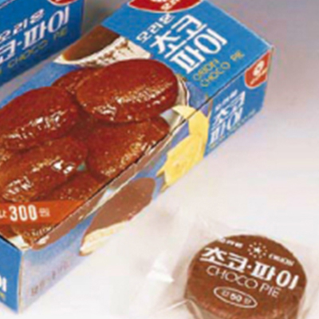
1974
오리온 초코파이
오리온은 1974년 초코파이를 독자 개발, 새로운 역사를 쓰기 시작했습니다. 초코파이는 출시 첫해부터 매년 100% 이상 성장하며 오늘날 오리온이 있기까지 발전의 기틀을 마련하는 데 큰 역할을 했습니다. 2021년 초코파이는 전 세계 34억 개 이상 판매되며 사상 최대치인 글로벌 연매출 5천억 원을 달성, 글로벌 누적 매출 6조 4천억원을 돌파하는 등 K-스낵을 대표하는 브랜드로서의 위상을 공고히 했습니다.
-
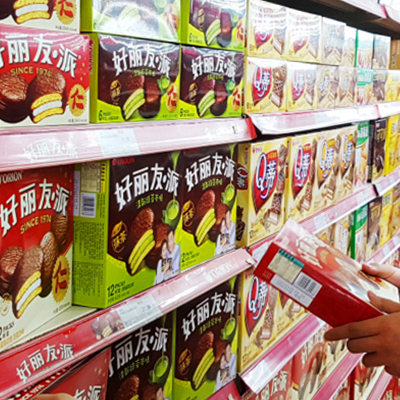
1993
해외 진출의 시작
1993년 베이징 사무소를 개설해 중국에 첫발을 내디딘 오리온은 1995년 중국 현지 법인 OFC(ORION Food Co., Ltd.)를 설립했습니다. 이를 기반으로 1995년 수출 1천만불탑을 수상하고, 1996년에는 수출 300억 원을 달성했습니다. 오리온은 1997년 마침내 랑팡 공장을 설립하고 상하이, 텐진, 다롄 등으로 중국 시장 내 유통망을 넓혀나갔습니다.
-
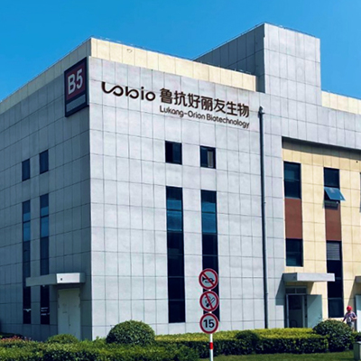
2020
글로벌 기업으로 도약
오리온은 2017년 ‘글로벌 종합식품기업 도약’을 선언한 이래 음료, 간편대용식, 바이오 등 다양한 신규사업을 본격화하며 제과회사를 넘어 글로벌 식품·헬스케어 기업으로 변모하는 중입니다. 66년의 제조 노하우와 중국, 베트남, 러시아, 인도 등 해외 법인의 탄탄한 글로벌 네트워크를 바탕으로 세계 기업들과 경쟁하며 지속 성장해 갈 것입니다.
- 1956
-
07풍국제과 인수
09동양제과로 사명 변경
- 1957
-
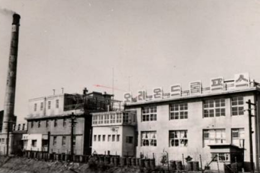
06국내 최초 근대식 캔디 제조시설 도입
12‘오리온 킹드롭프스’ 출시
- 1958
-
09소프트 비스킷 제조를 위한 자동 성형기 도입
- 1960
-
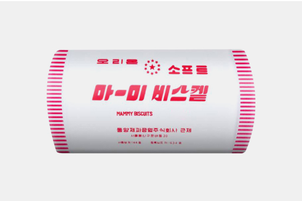
현대식 비스킷의 명품 ‘마미비스킷’ 출시
- 1962
-
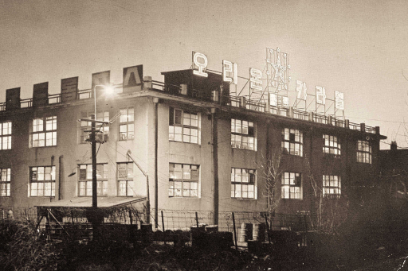
천연과즙향 ‘후르쯔드롭프스’ 출시
츄잉 소프트캔디 ‘츄낫캔디’ 출시
‘해피비스킷’ ‘오리온 크래카’ 출시
- 1965
-
비스킷, 소프트캔디, 판초콜릿 등
다양한 신제품 개발
- 1968
-
08캔디 자동 포장화 공정 시작
09판초콜릿 제조하며 국내 시장 석권
- 1971
-
동양세멘트 법정관리 여파로
동양제과 부도 직면
- 1973
-
재정 안정화 및 경영 합리화 시작
- 1974
-
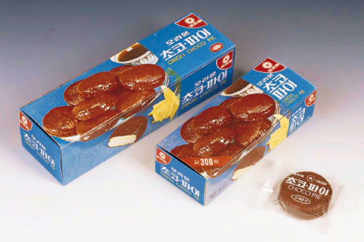
04'초코파이' 출시
- 1975
-
06기업공개(IPO) - 166만 주
- 1976
-
껌 수출 시작
08'오징어땅콩' 출시
- 1977
-
05국내 최초 비스킷 자동 포장
- 1982
-
'다이제' 출시
- 1988
-
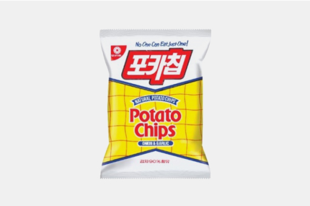
'포카칩' 출시
- 1989
-
초코파이情 광고 시리즈 시작
국내 최초 구취 제거 껌 ‘후라보노’ 출시
- 1993
-
02중국 베이징 사무소 설립
09초코파이 러시아 첫 수출
- 1995
-
중국 현지 법인 OFC
(ORION Food Co., Ltd.) 설립
11수출 1천만불탑 수상
- 1996
-
수출 300억 원 달성
농구단 창단
- 1997
-
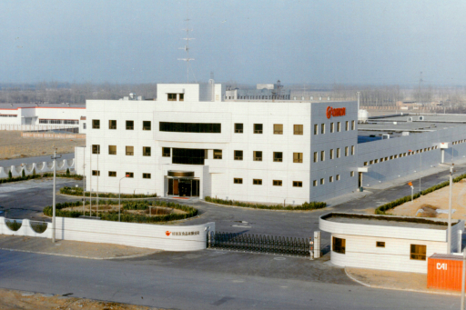
중국 랑팡 1공장 설립
- 2001
-
오리온그룹 출범
- 2002
-
중국 상하이 공장 설립
- 2003
-
(주)오리온으로 사명 변경
- 2006
-
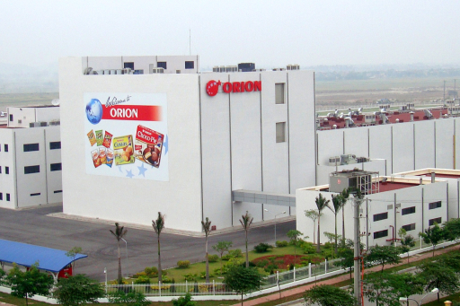
중국 랑팡 2공장 설립
베트남 미푹 공장 설립
러시아 뜨베리 공장 설립
- 2008
-
러시아 노보 공장 설립
‘닥터유’, ‘마켓오’ 브랜드 론칭
- 2009
-
베트남 옌퐁 공장 설립
국내 제과업계 최초 전 공장 HACCP 인증
- 2010
-
중국 광저우 공장 설립
- 2013
-
중국 연 매출 1조원 돌파
- 2014
-
국내 제과업계 최초 ‘착한 포장’ 실시
중국 셴양 공장 설립
- 2015
-
베트남 누적 매출 1조원 돌파
윤리경영 선포
- 2016
-
사상 최초 그룹 영업이익 3천억원 돌파
베트남 연매출 2천억원 달성
‘바나나 초코파이情’ 출시
오리온-농협 합작법인 설립
‘제주용암수’ 인수
- 2017
-
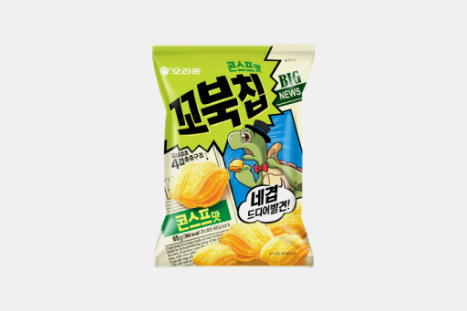
‘꼬북칩’ 출시
글로벌 음료사업 진출 선언
- 2018
-
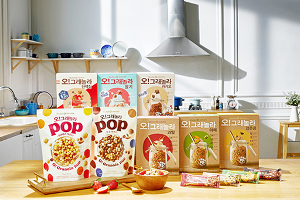
간편대용식 브랜드 ‘마켓오 네이처’ 론칭
‘오리온농협’ 밀양 공장 준공
- 2019
-
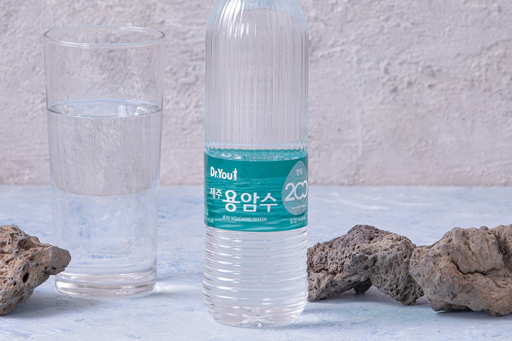
오리온 제주용암수 생산 공장 준공
‘오리온 제주용암수’ 출시
- 2020
-
베트남 누적 매출 2조원 돌파
중국 국영제약기업 ‘산둥루캉의약’
바이오 사업 합자계약 체결
‘꼬북칩 초코츄러스맛’ 출시
‘닥터유 단백질바’, ‘닥터유 드링크’ 출시
- 2021
-
인도 라자스탄 공장 준공
닥터유 브랜드 사상 최대 매출 달성
베트남, 러시아 법인 사상 첫 연매출
3천억원, 1천억원 돌파
중국 암 체외진단 제품 생산설비 구축
글로벌 탄소배출 통합관리체계 구축